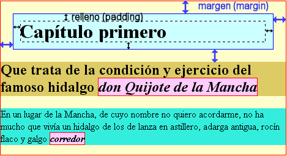
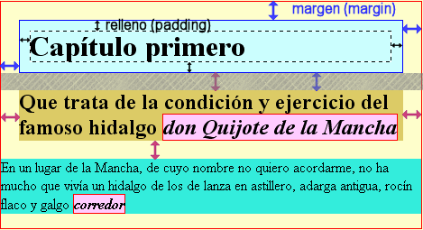

Estilos>>Márgenes y rellenos

Lo primero que necesitaremos es conocer, aunque sea someramente lo que suponen los elementos en bloque y los elementos en línea a la hora de construir una página.
Para empezar, y aunque sea de una forma muy burda,
podríamos indicar que los elementos en bloque son aquellos
que generan de forma automática un salto de linea previo y
otro posterior, mientras que los elementos en línea forman
parte de una línea o renglón. Por ejemplo, <p>
o <h3> serían
elementos en bloque, mientras que <strong>
o <img> serían
elementos en línea.
Aunque hay algunos elementos más que entran dentro de la categoría de elementos en bloque lo importante para abordar los márgenes y rellenos, es tener en cuenta que para formatear cualquier elemento en la página, sea en línea o en bloque, lo que se genera es un cuadro, cuyo contenido básico es el que se encuentra dentro de las etiquetas que delimitan el elemento.

Cada uno de estos cuadros está formado por varios componentes que completan sus dimensiones:
En la imagen que se
muesta a continuación nos
encontramos con un elemento en bloque <h1>
que genera una
caja contenedora en la que aparece el texto.
La captura de la imagen se ha hecho de una pantalla en la que
se habían
especificado como propiedades del selector h1
las siguientes:
border: solid thin blue;padding:10px;margin:20px;Como el texto no ocupa todo el espacio de la caja comprobamos
que queda un espacio vacío en la zona derecha.
También vemos que entre la zona de contenido y el borde azul
queda una zona, que mantiene el mismo color del resto del cuadro, cuyo
grosor es el establecido por la propiedad padding.
Entre el borde azul y el límite del contenedor
ancestro (en nuestro caso body) y los
elementos adyacentes observamos
la existencia de un espacio transparente que deja ver el color del
contenedor ancestro cuyo grosor corresponde al
valor de margin.
Una cuestión que conviene tener en cuenta es que, cuando se superponen verticalmente dos zonas de margen no se suman sus anchuras, sino que se toma el valor máximo de las dos y ese es el que se aplica.
Si lo piensas detenidamente parece que es la
opción que más se puede acercar a lo que se
supone que nos planteamos cuando establecemos márgenes para
diseñar un espacio. En la imagen que se muestra hemos
aplicado un margin:20px al selector
<h2> que constituía
el segundo
párrafo, con lo cual las dos zonas se superponen. En el caso
de que el margen del segundo bloque hubiera sido, por ejemplo, de 10
píxeles habría prevalecido el valor 20 del bloque
<h1>, mientras que si hubiera
sido superior a 20
sería ese valor el que se habría tomado como
referencia para separar ambos bloques verticalmente.
Según la especificación CSS2 del W3C el contenido debería incluir solo eso: el contenido, pero no todos los navegadores lo implementan así. En particular, las versiones de Internet Explorer anteriores a la 6 interpretan el modelo de caja adjudicando como ancho del contenido el que corresponde a la suma de la zona de contenido, el relleno y el borde, lo cual provoca serios desajustes en la forma de visualizar las páginas.
En general, podremos especificar la anchura y la altura de los elementos en bloque, mientras que los elementos en línea la anchura y la altura serán las mínimas para que quepa el elemento.
Espero que con esta visión básica de los cuadros (box) hayas podido explicarte algunas situaciones que tal vez te hayan llamado la atención en momentos previos cuando has aplicado propiedades como el color de fondo o los bordes. Es probable que si ahora repasas algunas de estas prácticas previas puedas entender claramente hasta dónde llegaban en algunos momentos los colores y por qué.
En el editor de CSS de N|VU podrás acceder a las propiedades que se mencionan a continuación dentro de la pestaña .
La magnitud que podemos variar en los márgenes es
su anchura. Como ya hemos visto cuando revisamos la propiedad border,
el orden de aplicación de los valores declarados es en
sentido horario comenzando por el margen superior. En la
versión
actual del editor de CSS integrado en N|VU el orden en el que se
presentan las cajas para introducir los valores no coincide con el que
se utiliza como norma para su inclusión en los selectores,
sino
que aparecen en lo que se podría considerar una lectura de
arriba a abajo como superior, izquierda, derecha e inferior.
Propiedad: margin
Valores: puede utilizarse un valor
absoluto, expresado en cualquiera de las unidades
admisibles en CSS, un valor relativo
expresado en porcentaje o
el valor auto para que cada navegador
aplique su interpretación por defecto.
Podemos desglosar la propiedad para especificar únicamente alguno de los márgenes mientras que los demás permanecen en su valor automático.
Propiedad: margin-top,
margin-right, margin-bottom,
margin-left
Uno de los problemas que suelen solucionarse de forma habitual es el centrado de un bloque dentro de la página. Hay una solución sencillísima utilizando hojas de estilo:
Lo primero que hacemos es crear una capa con la etiqueta
<div> que incluya el contenido que queremos
que aparezca
centrado.
El contenido CSS para conseguir el efecto sería
#centrada {width:450px; margin:auto;}
También se ha añadido un borde para que resulte claro el efecto.
Parece que el código es muy sencillo y correcto...si estás viendo la página con Mozilla, Firefox u Opera pero si la estás viendo con Internet Explorer pensarás que se ha escapado algún error porque ves el cuadro alineado a la izquierda. Es uno de los problemas con la implementación que hace Internet Explorer de las CSS. Mientras que en Mozilla, Konqueror o Galeón se ve perfectamente, en Internet Explorer hay que hacer una pequeña componenda que se muestra a continuación:
Hay que crear dos capas contenedoras: una general y dentro de ella la centrada y crear los selectores de tipo id, o las clases si lo preferimos, para especificar las propiedades CSS.
#Contenedora { width:100%; text-align:center;}
Aunque la propiedad text-align no debería afectar a la capa sino solamente al texto, Internet explorer parece que ha optado por implementar esta propiedad como un centrado genérico aplicable también a las capas.
#CentradaIE { width:450px; margin:auto;
text-align:justify;}
Ahora, se corrige la alineación del texto en la capa en la que está realmente el contenido
Al igual que en los márgenes la magnitud que podemos variar es su anchura. El comportamiento es totalmente homologable, aplicándose los valores de la misma forma, por lo que unicamente nombraremos la propiedad
Propiedad: padding
Desglosamos la propiedad exactamente igual que los márgenes.
Propiedad: padding-top,
padding-right, padding-bottom,
padding-left
En los elementos en bloque podemos especificar la anchura y la altura, mientras que no es posible hacerlo con los elementos en línea que las adecúan al mínimo necesario para mostrar el contenido (incluidos rellenos, bordes y márgenes)
Propiedad: width
(anchura)
height (altura)
Valores: además del
valor auto podemos especificar las
dimensiones en términos absolutos utilizando como siempre
cualquiera de las unidades aceptables y en términos
porcentuales sobre el contenedor en el que se inserta el bloque al que
atribuimos dimensiones.
<h1>
y establece las propiedades de margen en un valor de
30 píxeles.<h2>
pero
dándole un valor de 10 píxeles.<h1>,
un
párrafo normal, un encabezado <h2>,
otro párrafo
normal, un encabezado <h1>,
un encabezado <h2> y un
párrafo
normal. <h2>
respecto a los elementos adyacentes.<h2>
para ponerlo en 40 píxeles y comprueba los resultados. margin
y padding aplicados a todos los lados o
sólo a algunos de ellos. span
para indicar
una zona del texto y aplícale un estilo en línea
o bien un selector de tipo id que hayas
definido en la hoja de estilo con propiedades de margen y relleno.width y height
a un elemento en
bloque como pueda ser el h1 y a un elemento
en línea como
pueda ser la zona span que acabas de definir
y observa la diferencia.